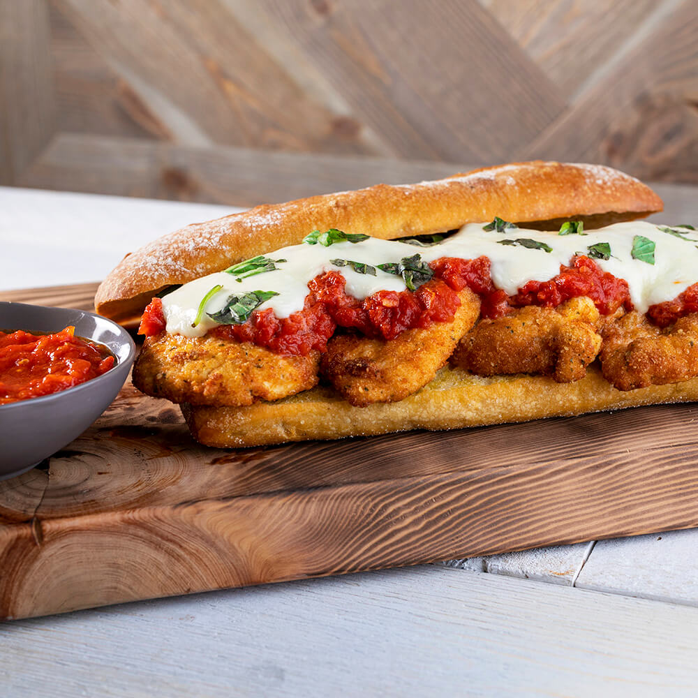

Ingredients
- Canned Tomatoes
- Tomato Paste
- Oregano
- Ciabatta Bread
- Olive Oil
- Flour
- Salt
- Pepper
- Egg
- Milk
- Bread Crumbs
- Parmesean Cheese
- Basil
- Chicken
- Vegetable Oil
- Mozzarella Cheese
Steps
- Preheat oven to 425°F. Pour tomatoes, tomato paste and oregano into blender and puree until smooth. Pour into small saucepan and bring to a boil. Reduce heat to low and continue cooking until sauce is thickened, 20 to 25 minutes.
- Brush cut sides of bread with olive oil. Place cut side-down on a baking sheet. Bake 10 minutes, until golden brown and toasted.
- Stir together flour, salt and pepper in a shallow dish. Stir together egg and milk in a second shallow dish. Stir together breadcrumbs and Parmesan cheese in a third shallow dish. Dredge each piece of chicken lightly in flour, coat with egg wash and then with breadcrumbs.
- Heat vegetable oil in a 10-inch skillet over medium heat to 350°F. Fry chicken in batches until golden brown and crispy, 2 to 4 minutes per side. Drain on a paper towel-lined plate.
- Place chicken on bottom half of toasted bread. Ladle about 1 cup tomato sauce over chicken and top with sliced mozzarella. Bake until cheese melts, about 5 minutes. Sprinkle basil over cheese. Place top of bread on sandwich and cut sandwich into desired serving sizes. Serve with remaining sauce for dipping.
Back to recipes page